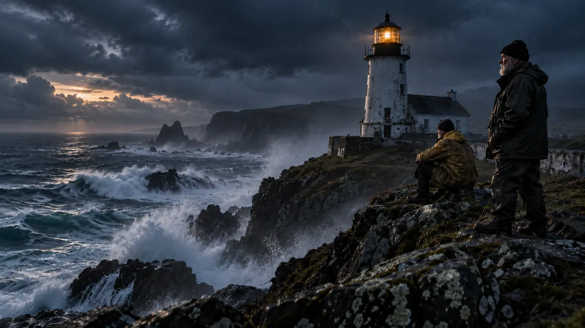

Long read
The last lighthouse keepers
The lamps went automatic decades ago. A handful of keepers stayed on anyway, and they have stories nobody wrote down.

Aron Varga still winds the clockwork, though nothing depends on it now. The lamp has run from the mainland since the year his daughter was born, and the logbook he and his brother keep is read by no one. They keep it because the light was never only a lamp.
Advertisement
Across the coast, eleven keepers stayed on after automation. Most were asked to leave and refused politely; two were simply forgotten by the payroll and carried on unpaid.